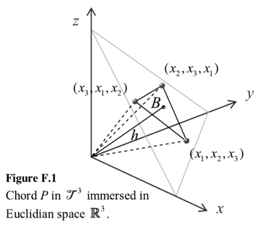

Evolving Barycentric Chords
What do the fittest barycentric chords of an evolutionary generic algorithm sound like? Bary- what? Genetic what?
tl;dr: barycenter4

A while ago I read a thin book about analyzing chords based on their "barycenter." That word comes from the world of astronomy and means "the center of mass of two or more bodies that orbit one another and is the point about which the bodies orbit", according to Wikipedia.
While mathematical analysis of music is interesting in and of itself, being a musician I wanted to actually hear results.
So in this iteration of my algorithmic musical foolery, I chose to investigate "genetic" methods of evolving artificial things. In my case, these "things" are 3-note chords - triads.
In the program, I decided to use the cool module, AI::Genetic in conjunction with Music::Interval::Barycentric. The first is an object oriented library with a few crucial methods and a few optional settings for evolving a population of individuals. The second is used to compute the fitness of each evolved chord.
Basically, I instantiate a new AI::Genetic object with standard settings; but also custom bits: A fitness function, and the type of chromosomes to use called, "listvectors." The fitness function determines the "value of a chromosome", and is based on the barycentric "evenness_index()" function of the allowed chord. The type of chromosomes are "listvectors", because they are lists of vectors! 3 to be exact. And these vectors are the pitch-class note numbers from 0 to 11. So each chromosome is 3 each of one of these pitch-classes (making a triad).
With the fittest chords in hand, I play phrases that are either 1. the chords played legato, 2. single notes played staccato, or 3. the chord broken in two parts - a leading tone followed by the remaining (two) notes. These are played alternately and sound pretty crazy. To actually render notes, I write to a MIDI file and, in this case, use VLC to export to MP3:
As you can tell, the chords go from "random" to progressively more pleasant. That is, the piece starts of with dissonant sounding tone-clusters and slowly evolves into more consonant chords.
After some fiddling, I re-worked the program into a more "musical" version with half-note wandering bassline and rhythmic phrases (a la Music::Duration::Partition) for the evolved chord progression. It sounds like you were "dropped into" an ongoing tune... Here are some more audio renderings:
Ok. I find it hard to not tweak and fiddle about... Here is a longer piece made with yet another variation: